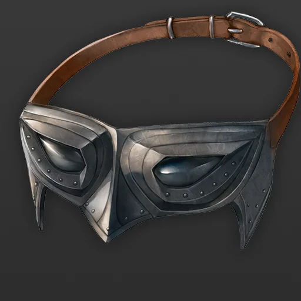
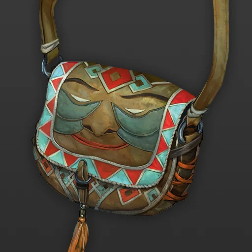

앨리안이 모두를 모으고
승기를 잡나 했더니
앨리안이 죽고
갑자기 하흐란의 전력이 말도안되게 쌔지면서
뭔가 전황이 안좋게 흘러가기 시작했습니다
그 와중에
아르벨은 자신이 혼자 나가서 쥬덴의 지원을 받아오겠다고 탈출했습니다


이 마을에 남은 미련이라던가 그런게 있나요? 한번 떠올려봅니다 각자 동시에 묘사해보세요


그것은 할머니가 미련이라는 말이 아닐까요!
글씨가 두개씩 뜨는데
아들 부부를 찾을 길이 없는 이유는
무엇이죠?
예전에 웬디 이미지 만든거
(아이고 이쁜이)
가게를 거의 폐업하다 나오는 니콜라스와 눈이 마주치는군요
"이럴때일수록 다들 힘을 냈으면 좋겠지만, 그런건 말로 되는게 아니니..."
(엣
"한창 떠나있다 갑자기 돌아와서 자꾸 떠나자 그러니.."
"그 때 그 일을 겪기 전까진 그랬죠.."
"...."
슬슬 마을 내에서는 아르벨이 혼자 살기 위해서 도망친거라는 소문이 돌기 시작합니다
"어느쪽이든 높은 가능성에 거는 게 현명할거야."
여러가지 이유로 이제는 거의 라스티만 혼자 쓰고 있습니다

"여러분을 부른 이유는.."
목이 매이는 것 같습니다
"여러분도 그렇겠죠?"
"모두 도주해도 좋습니다"
"쥬덴의 기사가 지키고있을겁니다"
"그 자는 강한가? 그 하흐란들 만큼?"
"하흐란 정도에 이렇게 애를 먹지 않았을텐데"
라며 책상에 주먹을 쾅 칩니다
"네 반드시입니다"
아니다 모른다
(아르벨이 그 때 다이스 높게나와서 거짓말함
모든건 라스티의 말일 뿐입니다!
(게임 아니라고... 실제라고..
(네 약간 강하다고하면
(좀 주저할수도있을거같아가지고
(급 걱정
(하흐린 < 쥬덴) 이긴 함
"네 100퍼센트입니다. 이길 수 있어요
(별에 별 짓을 다 한다 생각 중)
(드루이드 지금 죽는다)
"...."
"한다 안한다 밖에 없습니다."
"우리에겐 망설일 시간이 더이상 없어요"
(가져오는거에는 거부감 없는데

(아르벨걱정을하네..!)
"성함은 귄터 크라프트, 에리히 크라프트..."
"혹시 들은 적 있나요?"
"이번 위기를 넘기면 쥬덴가의 이름으로 협조할 것을 약속합니다."
"이 임무가 성공하든 실패하든"
"협조하는 건 아마 마지막이 될 것 같네요."
"대신에 당신과 당신의 가족의 안전은 보장할게요."
"시체가 사라진지도 모를거라고 생각합니다"
"잘 모르겠네요... 뭔가..."

"하나만 더,"
"시체는 하나야?"
"전부 제 것이니"
(라스티 너무 데면데면해
"아르벨은 어떻게 된건지 모르십니까?"
"....."
"소문대로 도망친건가요?"
"맞나요?"
".... 이거 기억하세요. 저는 아르벨 같은 겁쟁이를 예전에도 본 적이 없습니다."
"아무것도 모르는 사람하고 대화가 안되는군요."
여러분은.. 그녀의 말대로 시체를 훔치러갑니다. 그녀가 알려준 위치는.. 키시암과쥬덴가의 사이쯤에 위치한 마을입니다. 크로스로드에도 그렇게 멀지 않은 곳에 있는 작은 마을입니다
그리고 뭔가 그러고 나가는 와중에 할다론과 조우합니다
(영화를 안봐서 뭔지 하나도 모르겠군요
"저도 마찬가지고 마음이 복잡합니다만....."
"그래도 지금은 마을을 구할 방법이 있다면 뭐라도 해보고싶어요."

"마을을 지키려면!"

(자그마한 니들
(매우많이)
"아하하..."
(얼추 맞는거 같기도
(누가 할리퀸입니까?
(얀데레 모드의 피아?
(왜 자꾸 그렇게 되죠
(ㅋㅋㅋㅋㅋㅋㅋㅋㅋㅋㅋㅋㅋㅋ
(벨라는 인챈트리스다 인챈트리스..
(그냥 대충만...
제법 시간을 쓸거같습니다
진짜 이것이 거의 최후의 행동이 되겠군요
(노인공경
(말탄 할무니 한명과 걸어가는 젊은이 다섯명...
(정말 안수상하다...
(생각 없었음
"담고 나르고 반복해봐. 싸우기 싫으면."
마을에 오자 묘하고 이상한 기류가 흐르고 있는게 보입니다
사람들은
뭔가에 공포에 질려있는 것 같은 느낌이 들고
그리고 뭔가 사람들이 지나가면서 한번씩
그 시체를 향해서 돌을 던지고 있습니다
모두 공포에 질려있고
중앙에 벤치 하나에 앉아서 졸고 있는 사람 하나를 두려워하는 것 같아보입니다

니콜라스도 렌즈를 끼고 주변을 자세히 살펴봅니다
몇몇 무장한 군인들이 보이긴 하지만
"대체 무슨 일이 있길래 이러고 있는건지 잘 모르겠네요... 정보수집이라도 해봐야할까요?"
(지역신앙이었던가
아서왕 전설에 나오는
호수의 여인 느낌임
"지금 여러분은 너무 눈에 띄어요"
"....그리고 여기서는 눈에 띄는 행동은 안하는게 좋아요"
"쥬덴의 기사들이 ... 이곳에 있거든요"
"저는 느낄 수 있어요 그분의 온기를"
"그리고 용기의 존재.."
"아픔을 느끼지 않고, 두려움을 모르는 자들의 여인"
".... 이 슬럼버베일에서는 지금 모든걸 조심해야하니까요"
라며 저 효수된 곳을 보고 마치 아름다운 것을 쳐다보는 듯한 눈으로 변합니다
"헉...헉.."
"...아나에요."
"이 마을에는 제가 반드시 필요해요"
라며 숨을 몰아쉽니다
네 엄청나게 썩어있습니다
"이 마을의 사람을.."
"지켜주고 기억할 사람이 없으니까요.."
마법의 형태죠
그러면..
기사에게서 강렬한 빛이 느껴집니다
마치 살아있는 태양과 같은 맹렬한 생명의에너지가 느껴집니다
종교학
23
Guidance
그런 것은 일채 없습니다. 그의 주변에서 뭔가의 주문의 흔적은 느껴지지 않습니다
주변 주문의 흐름이 마치 혼돈 처럼 느껴집니다 그게 전부입니다.
피아는 그에게서 강한 생명의 기운을 느낍니다. 이것은 어떠한 신의 축복이겠지요
지금 저 존재는 거의 죽지도 않고 정신적으로 제압도 되지 않는 살아있는 전차같은 존재입니다!
다리도 잘리고 팔도 잘립니다
하지만 목을 베도 그 정신은 살아있을 뿐입니다
"개인적인 경험상, 죽지 않는다 뿐이지 상처를 입히니 팔다리를 자르는 식으로 제압합니다만..."
"쥬덴의 기사들은 정예라고 하였죠. 저희가 제압이 가능할지는 역시 미지수군요."
"개종하시겠어요?"
"시체 회수는 어떻게 해볼 수 있을 것 같은데..."
*하며 미스테리어스 포션을 꺼냅니다
@UUID[Actor.BbsGM2VAufVWqHWR.Item.ypx9EumTgSfLMUYZ]{Mysterious Potion}
(영어네
Pass without Trace
Shield of Crows
(아하

(이것도있어가지고)
손놀림
23
(아 그런가요

(걸거에요
(그거 할다론이 붙어있어야 가능함 ㅋㅋ
(자기 주변에 거는거라
(은신을 걸면 안되는거 아니신?
(몰래쓰고싶어서요
(은신 굴림이라는건 결국 안들켜야 굴리는건데
(그것은 투명화임
Eldritch Cannon
(까마귀 먼저 보내본다는게
아무 의미없는 선언이 될거같아서
(저는 아예
까마귀 떼 안에 있어야지
저걸 쓴다면 무슨 묘사가 되냐면
쟤가 까마귀 떼 안에 계속 있어서
Invisibility
그러면 선언해주세요

Protector
피해: 9
분위기가 그야말로 세기말 느낀이겠네요
그는 그대로 잠만잡니다
까마귀떼가 나타나자 겁에 질립니다
Cacophony
DC 10 : 내성 굴림
걸립니다
그러면 은신 굴림은 의미가 없겠군요
재빠른 손으로 하겠습니다
(와
(20만 둘 떴다
효수된 목없는 시체들을
줄줄히 넣어야겠군요
(오호)
시체가 사라진 것에 대해서 민중은 당황하지만
이상할 정도로 저 기사들은 당황하지도 동요하지도 않습니다
아무것도 모르고 못느낀다
"일단 고생하셨습니다."
"라스티 씨도 그런 뉘앙스의 말을 했던 거 같은데"
모든 자극에
둔감한 것 같군요
말라비틀어진 시체를 가져다줘야겠군요
라스티가 나지막하게 그 시체들을 보며
말합니다
"네 이것이 맞습니다"
"분명히 제 기사들입니다"
그리고 뭔가를 끄집어내는군요
"최소한의 보상입니다. 자 저는 바쁘니깐"
"하룻밤 동안은 절대로 저를 방해하지 말아주세요"
(나는 심장이 없서
(하룻밤.... 긴휴 처리 되나요?ㅋㅋㅋ
*나와봅니다
라스티의 집무실입니다

그 대로 제라드는 의자에 앉아있습니다
"하룻밤동안 방해하지 말라고 했었는데!"
그러면 라스티의 모습이 그 어디에도 보이지 않습니다
그녀는 아무 기록도 남겨두지 않았지만
무언가를 읽고있던 것 같습니다
오랫동안 나눈 편지가 그곳에 여러장 있습니다
엘리안은 상대를 '그녀' 혹은 선생님 이라고 호칭하고 있으며
그 관계성은 마치 사제관계 같다는 느낌이 듭니다
그리고 주목할 만한 한 장을 발견합니다
라며 발신자는 실버 문 이라고 적혀있습니다.
(실버문?!
(거기서 기억 읽을수 있는 포션 있어서
d100 굴려서 1~30 나오면 있다고하죠
(아 또 다시 찾아온 실력의 시련
1d100
11
포션을 쓰게 해리
Potion of Puddle Scrying
제라드가 검을 가지고 들어옵니다
라고 말하며 제라드는
하지만..
그녀가 손을 뻗자 갑자기 제라드는 머리를 싸매며
기절해버립니다
그러며 얼굴을 쓰다듭습니다
(좀미안하다
(시체들은 목이 달려있나요
"내 기사들이여"
"우리는 대체 무슨 짓을..."
*내용을 설명해줍니다
깊은 탈력감을 느낍니다.
최악의 날에
과연
이 죽기위한 전투에서
(저정도면 레귤러급으로 자주나온거긴함
(주요 npc를 다 피해서 만났어요
(아르벨만 빼면 다 초면
(아무튼
(매우 충격...
(아무튼 고생하셨습니다~